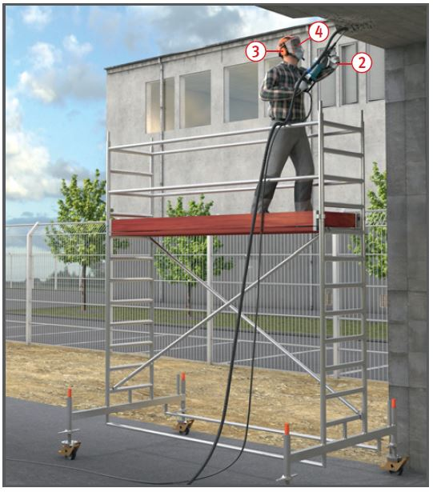

Ungeschützte Maschinenteile und wegspringende Bruchstücke von Bauteilen können Verletzungen verursachen.
Durch Freisetzung von gesundheitsgefährlichem Staub kann es zu Erkrankungen der Atemwege kommen.

Schutzmaßnahmen
Möglichst nur rückstoßarme und schallgedämpfte Geräte verwenden .
Stumpfe Meißel oder abgebrochene Werkzeuge auswechseln.
Bewegliche Anschlussleitungen gegen mechanische Beschädigung schützen.
Schlauchverbindungen (Kupplungen) bei Druckluftgeräten gegen unbeabsichtigtes Lösen sichern, z. B. Verwendung von Sicherheits-Schnelltrennkupplungen.
Vor dem Trennen der Verbindungen von Druckluftleitungen diese drucklos machen.
Immer einen sicheren Standplatz wählen. Stemmarbeiten nicht von Leitern und Hubarbeitsbühnen ausführen.
Zusatzgriffe benutzen .
Verdeckte Leitungen vor dem Bohren mit Magnet- und Leitungssuchgerät orten.
Schalterarretierung nur bei Arbeiten mit Bohrgestellen betätigen.
Gerät erst nach völligem Stillstand ablegen.
Gehörschutz verwenden .
Bei Gefährdung durch abspringende Teile Augenschutz tragen .
Bei Freisetzung von Stäuben, Geräte mit Staubabsaugung verwenden und/oder Ansaugschlauch von Luftreiniger an der Entstehungsstelle platzieren .
Sofern die Grenzwerte durch technische Maßnahmen nicht sicher eingehalten werden, muss geeigneter Atemschutz z. B. Halbmasken, gebläseunterstützte Filtergeräte mit Helm (mit Partikelfilter P2 oder P3) getragen werden.
Hinweise zu mineralischen Staub
Grundsätzlich staubarm arbeiten.
Ggf. zusätzlich Luftreiniger verwenden.
Absaugbohrer für eine bessere Staubabsaugung verwenden.
Durch eine räumliche Abtrennung (z. B. durch Staubschutzwände/Staubschutztüren) kann bei Stemmarbeiten die Ausbreitung von Staub in angrenzende Bereiche verhindert sowie die Wirkung von Luftreinigern verstärkt werden.
Arbeitsmedizinische Vorsorge
Arbeitsmedizinische Vorsorge nach Ergebnis der Gefährdungsbeurteilung veranlassen (Pflichtvorsorge) oder anbieten (Angebotsvorsorge). Hierzu Beratung durch den Betriebsarzt.